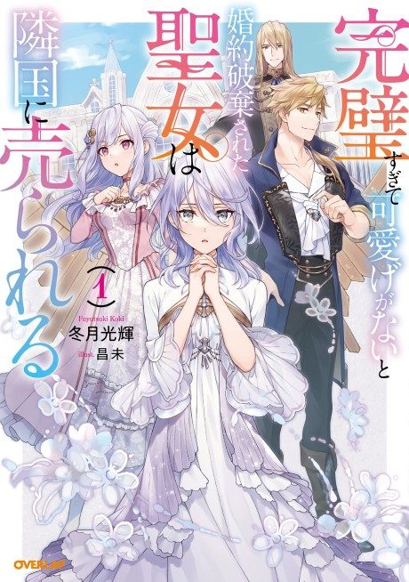

Anime
Anime
Light novel2025 · Fantasy, Romance
The Too-Perfect Saint: Tossed Aside by My Fiancé and Sold to Another Kingdom
完璧すぎて可愛げがないと婚約破棄された聖女は隣国に売られる
AniList7.2
Animeter—
Episodes12 ep
SourceUnclear
Is it worth pushing through?
Built from what visitors report across all 12 episodes.
Loading reports…Checking what other people said about this one.
Sign in with your email at the top of the page to add your report.
More like The Too-Perfect Saint: Tossed Aside by My Fiancé and Sold to Another Kingdom